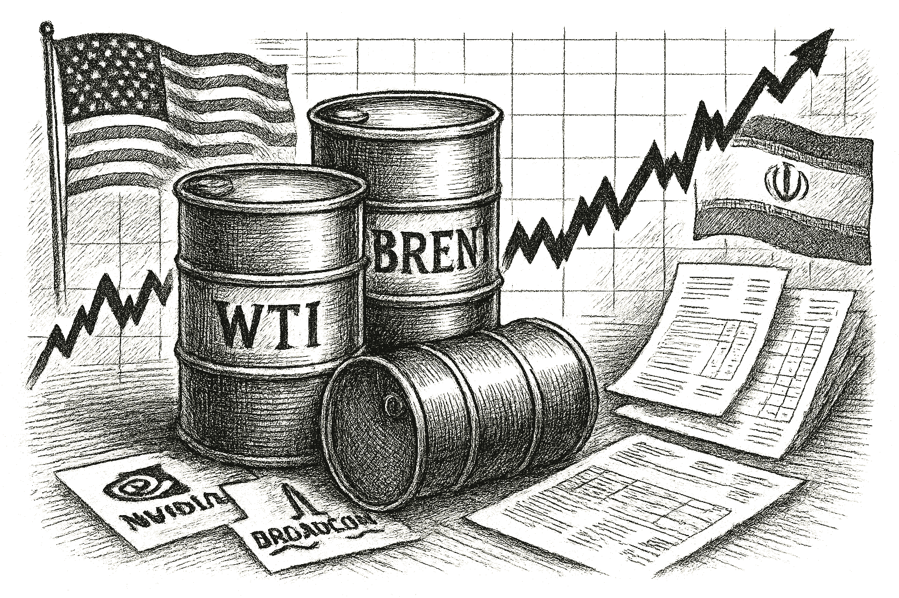

SPY
Current: $769.75Change: +15.70 (+2.08%)
Updated:
Source: yahoo_chartFreshness: fresh


Collaboration explores how quantum optimization could support natural gas transmission planning, with research executed on IonQ Forte-1 quantum hardwareTEL AVIV, Israel, Sept. 23, 2026 (GLOBE NEWSWIRE) -- Classiq and Israel Natural Gas Lines Ltd. (INGL) announced results from research applying quantum optimization to natural gas transmission planning, including execution of a reduced version of the problem on the IonQ Forte-1 quantum computer. Key Points Classiq and INGL explored how quantum opt

Today's Headline: Classiq, Israel Natural Gas Lines and IonQ Advance Quantum Optimization for Natural Gas Networks
Setup: Collaboration explores how quantum optimization could support natural gas transmission planning, with research executed on IonQ Forte-1 quantum hardwareTEL AVIV, Israel, Sept. 23, 2026 (GLOBE NEWSWIRE) -- Classiq and Israel Natural Gas Lines Ltd. (INGL) announced results from research applying quantum optimization to natural gas transmission planning, including execution of a reduced version of the problem on the IonQ Forte-1 quantum computer. Key Points Classiq and INGL explored how quantum opt
Today's Market Weather: Balanced - Deterministic market-risk score 47/100 reflects volatility normal, risk appetite supportive, breadth health narrow leadership, sentiment neutral, regime narrow mega cap risk on.
Why it matters: Joshua can distinguish verified facts from delayed values and open gaps while the active WOPR condition remains Learning present — untrusted.
What Joshua should watch: FDX remains the leading internal review target; its evidence stack now separates candidate confidence from portfolio risk.
What changed since yesterday: 128 canonical metric change(s) are available; Sentinel is ONLINE; market is OPEN.
Why This Matters: Classiq, Israel Natural Gas Lines and IonQ Advance Quantum Optimization for Natural Gas Networks is the clearest current evidence-led frame for Joshua's observation-only review; missing facts remain explicit intelligence gaps.

- What happened overnight: Canonical cross-asset moves collected; no causal narrative is assigned without a sourced event.
- What changed materially: 8 core instrument(s) exceeded the configured material-move threshold.
- Market risk: neutral (47).
- Macro regime: narrow_mega_cap_risk_on with confidence 0.76.
- Important canonical events: 25 deduplicated event(s) passed materiality and freshness checks.
- Why markets moved: WTI moved alongside Classiq, Israel Natural Gas Lines and IonQ Advance Quantum Optimization for Natural Gas Networks.
- Critical collection gaps: 0.
Why This Matters: Joshua can use verified cross-asset moves and deterministic risk context while keeping causation explicitly unresolved.

No high-priority earnings expectation block is supported by the current canonical snapshot.

- WOPR learning pipeline: Learning present — untrusted
- Candidates evaluated 24h: 0
- Current gate: Learning trust
- Notification ledger events in 24h: 4
- Pending orders created/canceled/filled/expired: 1/0/0/0
- Pending lifecycle interpretation: Pending-order cancellations have trackable reasons and no obvious rapid churn pattern.
- Portfolio risk: Label: High / Score: 91.5
- Latest intelligence gap report: intelligence_gap_report_2026-09-20.pdf
Why This Matters: The active gate is Learning trust, so the key question is why candidates are stopping before approval, not how to force trades.

- Sentinel role: infrastructure and operational status only.
- State: ONLINE
- Last successful validation: 2026-09-23T14:15:18.048529+00:00
- Payloads accepted/rejected: 20937/0
- Node health score: 100
Why This Matters: Sentinel is ONLINE, so Joshua should use its context only to the extent the latest accepted pulse is fresh and authenticated.

CANDIDATES MOVING THROUGH JOSHUA'S INVESTMENT-REVIEW WORKFLOW
FROZEN DAILY BRIEF SNAPSHOT | 2026-09-23T14:15:11.265878+00:00
QUEUE SUMMARY | Investment Ready: 0 | Waiting for Price: 0 | Waiting for Evidence: 2 | Research Underway: 2 | Governance Hold: 5 | Monitor Only: 0
Investment-ready status: No candidates are currently Investment Ready.
#6 QBTS - Waiting for Evidence [Moved Up 10->6]
Joshua's Thesis: Positive thesis not yet established.
Why Waiting: Waiting for the preferred entry price.
Price: 17.41 now; 20.10 preferred entry
What Unlocks It: Clear valuation support; Evidence that the business quality matches the risk being taken; Independent evidence streams pointing the same way
Portfolio Fit: 0.0/100 — VERY LOW
Portfolio Fit Drivers: projected Unclassified exposure 83.3%; projected Unclassified exposure 83.3%; candidate amount $100 vs $50 currently allocated
Candidate Risk: 100.0/100 — VERY HIGH
Risk Drivers: projected Unclassified exposure 83.3%; projected Unclassified exposure 83.3%; candidate amount $100 vs $50 currently allocated
Next: Fill before expires_at while entry conditions remain valid. Owner: Joshua.
#12 PLTR - Governance Hold [Moved Up 18->12]
Joshua's Thesis: Positive thesis not yet established.
Why Waiting: Governance gate has not cleared.
Price: 188.46 now; 180.23 preferred entry
What Unlocks It: Governance gate clears; Clear valuation support; Evidence that the business quality matches the risk being taken
Portfolio Fit: 0.0/100 — VERY LOW
Portfolio Fit Drivers: projected Technology exposure 83.3%; projected AI software exposure 66.7%; candidate amount $100 vs $50 currently allocated
Candidate Risk: 100.0/100 — VERY HIGH
Risk Drivers: projected Technology exposure 83.3%; projected AI software exposure 66.7%; candidate amount $100 vs $50 currently allocated
Next: Re-evaluate after the recorded gate clears. Owner: Columbo.
#14 SPCX - Governance Hold [Moved Up 19->14]
Joshua's Thesis: Positive thesis not yet established.
Why Waiting: Governance gate has not cleared.
Price: 153.50 now; 149.93 preferred entry
What Unlocks It: Governance gate clears; Clear valuation support; Evidence that the business quality matches the risk being taken
Portfolio Fit: 0.0/100 — VERY LOW
Portfolio Fit Drivers: projected Unclassified exposure 83.3%; projected Unclassified exposure 83.3%; candidate amount $100 vs $50 currently allocated
Candidate Risk: 100.0/100 — VERY HIGH
Risk Drivers: projected Unclassified exposure 83.3%; projected Unclassified exposure 83.3%; candidate amount $100 vs $50 currently allocated
Next: Re-evaluate after the recorded gate clears. Owner: Advisory Committee.
#16 ANGX - Governance Hold [Moved Up 21->16]
Joshua's Thesis: Positive thesis not yet established.
Why Waiting: Governance gate has not cleared.
Price: 4.82 now; 4.79 preferred entry
What Unlocks It: Governance gate clears; Clear valuation support; Evidence that the business quality matches the risk being taken
Portfolio Fit: 0.0/100 — VERY LOW
Portfolio Fit Drivers: projected Unclassified exposure 83.3%; projected Unclassified exposure 83.3%; candidate amount $100 vs $50 currently allocated
Candidate Risk: 100.0/100 — VERY HIGH
Risk Drivers: projected Unclassified exposure 83.3%; projected Unclassified exposure 83.3%; candidate amount $100 vs $50 currently allocated
Next: Re-evaluate after the recorded gate clears. Owner: Advisory Committee.
#18 IONQ - Waiting for Evidence [Moved Up 25->18]
Joshua's Thesis: Positive thesis not yet established.
Why Waiting: Evidence quality is insufficient.
Price: 42.79 now; 42.54 preferred entry
What Unlocks It: Clear valuation support; Evidence that the business quality matches the risk being taken; Independent evidence streams pointing the same way
Portfolio Fit: 0.0/100 — VERY LOW
Portfolio Fit Drivers: projected Unclassified exposure 83.3%; projected Unclassified exposure 83.3%; candidate amount $100 vs $50 currently allocated
Candidate Risk: 100.0/100 — VERY HIGH
Risk Drivers: projected Unclassified exposure 83.3%; projected Unclassified exposure 83.3%; candidate amount $100 vs $50 currently allocated
Next: Data confidence must reach at least 34/100. Owner: Joshua.
#20 XRAY - Research Underway [NEW]
Joshua's Thesis: Positive thesis not yet established.
Why Waiting: Research evidence is still being gathered.
Price: 9.84 now; Preferred entry not established.
What Unlocks It: Clear valuation support; Evidence that the business quality matches the risk being taken; Independent evidence streams pointing the same way
Portfolio Fit: 0.0/100 — VERY LOW
Portfolio Fit Drivers: projected Unclassified exposure 83.3%; projected Unclassified exposure 83.3%; candidate amount $100 vs $50 currently allocated
Candidate Risk: 100.0/100 — VERY HIGH
Risk Drivers: projected Unclassified exposure 83.3%; projected Unclassified exposure 83.3%; candidate amount $100 vs $50 currently allocated
Next: Clear valuation support; Evidence that the business quality matches the risk being taken; Independent evidence streams pointing the same way. Owner: Columbo.
#23 DIA - Research Underway [NEW]
Joshua's Thesis: Positive thesis not yet established.
Why Waiting: Research evidence is still being gathered.
Price: Current price unavailable.; Preferred entry not established.
What Unlocks It: Clear valuation support; Evidence that the business quality matches the risk being taken; Independent evidence streams pointing the same way
Portfolio Fit: 0.0/100 — VERY LOW
Portfolio Fit Drivers: projected ETF exposure 66.7%; projected Broad market exposure 66.7%; candidate amount $100 vs $50 currently allocated
Candidate Risk: 97.4/100 — VERY HIGH
Risk Drivers: projected ETF exposure 66.7%; projected Broad market exposure 66.7%; candidate amount $100 vs $50 currently allocated
Next: Clear valuation support; Evidence that the business quality matches the risk being taken; Independent evidence streams pointing the same way. Owner: Columbo.
#24 RCL - Governance Hold [NEW]
Joshua's Thesis: Positive thesis not yet established.
Why Waiting: Governance gate has not cleared.
Price: 223.80 now; 282.98 preferred entry
What Unlocks It: Governance gate clears; Clear valuation support; Evidence that the business quality matches the risk being taken
Portfolio Fit: 0.0/100 — VERY LOW
Portfolio Fit Drivers: projected Unclassified exposure 83.3%; projected Unclassified exposure 83.3%; candidate amount $100 vs $50 currently allocated
Candidate Risk: 100.0/100 — VERY HIGH
Risk Drivers: projected Unclassified exposure 83.3%; projected Unclassified exposure 83.3%; candidate amount $100 vs $50 currently allocated
Next: Re-evaluate after the recorded gate clears. Owner: Columbo.
#25 UUUU - Governance Hold [NEW]
Joshua's Thesis: Positive thesis not yet established.
Why Waiting: Governance gate has not cleared.
Price: 11.74 now; 14.60 preferred entry
What Unlocks It: Governance gate clears; Clear valuation support; Evidence that the business quality matches the risk being taken
Portfolio Fit: 0.0/100 — VERY LOW
Portfolio Fit Drivers: projected Unclassified exposure 83.3%; projected Unclassified exposure 83.3%; candidate amount $100 vs $50 currently allocated
Candidate Risk: 100.0/100 — VERY HIGH
Risk Drivers: projected Unclassified exposure 83.3%; projected Unclassified exposure 83.3%; candidate amount $100 vs $50 currently allocated
Next: Re-evaluate after the recorded gate clears. Owner: Advisory Committee.
Since the prior Chronicle: AVGO - Removed; NVDA - Removed
Observation only. This section creates no recommendation, order, authority, or execution instruction.

- If QBTS reaches the recorded price condition <= 20.1, which recorded evidence and governance requirements would still remain?
- Which recorded governance requirement must clear before PLTR can advance?
- Which recorded governance requirement must clear before SPCX can advance?
- Which recorded governance requirement must clear before ANGX can advance?

Generated from available local WOPR/Joshua/Sentinel observations. Missing sources are labeled unknown.
So what: Joshua has internal observations, but the editorial desk lacks live external context. The correct action is investigation, not confidence inflation.
Internal read: WOPR learning is Learning present — untrusted, pending lifecycle interpretation is Pending-order cancellations have trackable reasons and no obvious rapid churn pattern., portfolio risk is Label: High / Score: 91.5, and best opportunity is FDX.
Missing link: ChatGPT Live should connect those internal facts to external macro, volatility, sector, and headline conditions before Joshua treats the brief as a morning newspaper.
Why This Matters: Editorial analysis should sharpen Joshua's questions without pretending unavailable market facts are known.

Compared to: 2026-09-22
- Market weather: Calm -> Balanced
- Top opportunity: DELL -> FDX
- Joshua gate: Still Learning trust
- 2Y Treasury.last_price: 4.76 -> 4.71 (down); 2Y Treasury.last_price changed 1.05% versus the prior frozen Chronicle snapshot.
- 2Y Treasury.percent_change: 0.0 -> -1.0504201680672232 (down); Baseline was zero; percentage significance is unavailable.
- 10Y Treasury.last_price: 4.96 -> 4.96 (unchanged); 10Y Treasury.last_price changed 0.00% versus the prior frozen Chronicle snapshot.
- 10Y Treasury.percent_change: -0.9980039920159646 -> 0.0 (up); 10Y Treasury.percent_change changed 100.00% versus the prior frozen Chronicle snapshot.
- 30Y Treasury.last_price: 5.29 -> 5.29 (unchanged); 30Y Treasury.last_price changed 0.00% versus the prior frozen Chronicle snapshot.
- 30Y Treasury.percent_change: -0.936329588014978 -> 0.0 (up); 30Y Treasury.percent_change changed 100.00% versus the prior frozen Chronicle snapshot.
- SPY.last_price: 774.38 -> 769.75 (down); SPY.last_price changed 0.60% versus the prior frozen Chronicle snapshot.
- SPY.percent_change: 2.2432300400058107 -> 2.0820900470791126 (down); SPY.percent_change changed 7.18% versus the prior frozen Chronicle snapshot.
- QQQ.last_price: 745.859 -> 740.18 (down); QQQ.last_price changed 0.76% versus the prior frozen Chronicle snapshot.
- QQQ.percent_change: 5.86467766202062 -> 5.0317856737427515 (down); QQQ.percent_change changed 14.20% versus the prior frozen Chronicle snapshot.
- IWM.last_price: 288.5 -> 284.02 (down); IWM.last_price changed 1.55% versus the prior frozen Chronicle snapshot.
- IWM.percent_change: 1.1783685207266654 -> 0.0352211890673309 (down); IWM.percent_change changed 97.01% versus the prior frozen Chronicle snapshot.

Joshua's top opportunity changed from DELL to FDX. That does not imply an action; it tells Joshua which evidence stack deserves comparison.
- Unknown: Oil Prices; why it matters: Falling oil prices can lead to reduced inflationary pressures, positively impacting market sentiment. - Current observations are not sufficient to confirm or retire this warning.
- Still watching: Tech Earnings; why it matters: Strong earnings from tech companies can drive market rallies and investor confidence. - Current gate is Learning trust.
- Still watching: Sentinel market weather is degraded/offline; treat external environment context as limited. - Current Sentinel state is online.
Portfolio Construction Review
Current allocation: 50.0 allocated.
Largest sector: Technology at 50.0%.
Largest theme: AI infrastructure at 50.0%.
Diversification: Mixed (50.0).
Cash allocation: 95.0% unallocated.
Recommended exposure: FDX at portfolio-fit score 0.0.
Portfolio fit: FDX has a mixed portfolio fit; the diversification improvement is not decisive yet.
Why This Matters: Portfolio Manager evaluates whether an opportunity improves this portfolio; it does not select the investment, vote, or authorize execution.

Joshua's useful question today is whether the new top setup won on better evidence or merely on weaker competition.

| Can trigger trade | no |
| Can modify trade rules | no |
| Can add watch items | yes |
| Can add review questions | yes |
| Can adjust confidence notes | yes |
| Input policy | external_intelligence_plus_sanitized_internal_observations |
| External policy | The Editor-in-Chief synthesizes current world/market context where available and labels unknowns; provider/model provenance remains separate. |
| Internal policy | Joshua/WOPR/Sentinel facts are supplied as sanitized observation-only summaries. |
| Editorial model | ChatGPTEditorialProvider |
- Selected by a deterministic daily rotation through symbols already present in the persisted Chronicle snapshot.
- Next earnings: September 30, 2026 (after close); status: scheduled.
- Source: finnhub_earnings_calendar.
- Related event on the canonical wire: Micron, IBD Stock Of The Day, Surges Past Early Buy Point With Earnings Ahead
- European stocks gain as oil slides, AI buzz lifts tech - Reuters
- Desk: commodity; source: Reuters; linked symbols: none recorded.
- Published: 9/22/26 18:51 MST.
- High-impact watch: Advance Report on Durable Goods--Manufacturers' Shipments, Inventories, and Orders - 9/25/26 05:30 MST.
- Affected assets: US equities, Treasuries, USD; source: census_release_schedule.
- MU earnings: September 30, 2026, after close.
- Technology: 5.75% session performance; source: persisted sector ledger.
- Health Care: 1.63% session performance; source: persisted sector ledger.
- Industrials: 1.36% session performance; source: persisted sector ledger.
- BRENT: -6.46% recorded move; price: 97.16.
- Session: open; catalyst status: possible; source: yahoo_chart.
- Sentinel infrastructure state ONLINE - why it matters: operational freshness affects how much Joshua can trust external/context observations; would change Joshua's view: fresh validated Sentinel status returns before the market session.
- State: narrow_leadership; score: 50.90/100; advance/decline ratio: 1.59.
- Above 50-day average: 26.90%; sample: 119; provider: sentinel_sampled_breadth.
- Decision outcomes evaluated: 16; currently untestable: 0.
- Warning review: still watching 2, unknown 1; confidence calibration: insufficient_sample.
- Current macro regime: narrow_mega_cap_risk_on; change probability: unavailable.
- Risk dashboard: neutral (47/100); breadth: narrow_leadership; sentiment: neutral.
- Scenario board only - a current-state observation, not a forecast or execution instruction.

- Created the intellectual foundations of value investing and security analysis.
- Published quotation: "The intelligent investor is a realist who sells to optimists and buys from pessimists."
- Published framework: Estimate intrinsic value from verifiable business facts, buy only at a meaningful discount, diversify, and use the margin of safety to protect against analytical error and an uncertain future.
- Committee lens: Graham forces valuation discipline: what evidence supports intrinsic value, where is the margin of safety, and how badly could the estimate be wrong?
- Public philosophy profile only; no participation, endorsement, or current recommendation is implied.
- Which recorded governance requirement must clear before SPCX can advance?
- FDX: No canonical symbol-specific material event is linked.
- Attach the missing FDX evidence before the next committee review.
- Define evidence that would confirm or retire each unresolved warning before the next review window.
- If QBTS reaches the recorded price condition <= 20.1, which recorded evidence and governance requirements would still remain?
- Which recorded governance requirement must clear before PLTR can advance?
- Which recorded governance requirement must clear before SPCX can advance?
- Which recorded governance requirement must clear before ANGX can advance?
- Evidence agenda: FDX - No canonical symbol-specific material event is linked.
- Proposed review: Pending order lifecycle - why it matters: Pending-order cancellations have trackable reasons and no obvious rapid churn pattern.; would change Joshua's view: canceled-order regret analysis shows protection or avoidable missed gains.
- Proposed review: WOPR pipeline Learning present — untrusted - why it matters: the active gate shows whether today's constraint is opportunity count, evidence quality, or calibration; would change Joshua's view: candidates begin clearing the current gate with stronger evidence.
- Canonical instruments reviewed: 24; delayed 6, fresh 18.
- Leading sources: yahoo_chart (21), treasury_official_yield_curve (3).
- Snapshot recorded: 9/23/26 07:15 MST.
Classiq, Israel Natural Gas Lines and IonQ Advance Quantum Optimization for Natural Gas Networks
Storm meter: Balanced
#6 QBTS - Waiting for Evidence [Moved Up 10->6]
Observation mode: observation_only
Watch: Pending order lifecycle - why it matters: Pending-order cancellations have trackable reasons and no obvious rapid churn pattern.; would change Joshua's view: canceled-order regret analysis shows protection or avoidable missed gains.
Question: If QBTS reaches the recorded price condition <= 20.1, which recorded evidence and governance requirements would still remain?